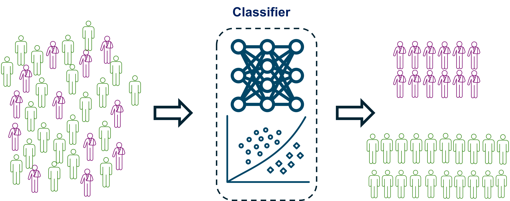

M.Sc. thesis: A Machine learning-based fall risk prediction for Parkinson’s disease patients
Objective: Develop a clinician-independent, automated algorithm to predict fall risk in Parkinson's disease (PD) patients, aiming to eliminate the inaccuracies and subjectivity inherent in traditional clinical balance assessments.
Phase 1: Device Development and Experiment Design
I engineered an affordable and portable device for measuring the center of pressure (CoP), inspired by Wii balance board with modified. We calibrated and validated our device against a gold-standard research-grade force plate. Our device was priced at less than 5% of the cost of these gold-standard force plates, while maintaining an acceptable level of accuracy.

Then we designed two dynamic balance tests inspired by traditional clinial tests by providing a real time visual feedback of patients' CoP ( the red dot in figures A and B). In A: limit of stability test, patients were instructed to shift their CoP to hit blinking targets displayed on a screen. In B: Random Control test, patients had to maintain their CoP within a moving target area that shifted randomly. Several balance metrics were defined based on their performance and ability to control their CoP during these tasks.
In the second phase of the project, 65 Parkinson's disease (PD) patients were recruited to participate in the study. These patients completed our designed balance tests and underwent clinical fall risk assessments conducted by expert clinicians. Based on their history of falls in the six months prior to the study, participants were labeled as either fallers or non-fallers.
Phase 3: Data Analysis and ConclusionI cleaned, filtered, and analyzed the collected data, extracting various features from both the patients' performance and the CoP signal, including time and frequency domain features. I then developed multiple supervised machine learning models, such as Support Vector Machine (SVM), K-Nearest Neighbors (KNN), and Convolutional Neural Network (CNN), to classify patients based on these extracted features. The performance of these models was compared against each other and evaluated against traditional clinical scales as assessed by clinicians. Among the models, SVM demonstrated the highest sensitivity and specificity in detecting fallers. This machine learning-based approach improved fall prediction precision by approximately 20% compared to existing clinical models.